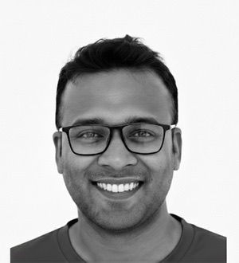

Medical image analysis
Deep learning and explainable AI approaches for diagnostic support across retinal, prostate, pneumonia, and skin cancer analysis.

Md ManiruzzamanAbout
I am originally from Bangladesh and currently pursuing an M.S. in Electrical Engineering at San Francisco Bay University in Fremont, California. My academic path spans electrical and electronic engineering, renewable energy systems, communication systems, machine learning, deep learning, IoT, and embedded systems.
My recent work includes an AI-powered Resume Analyzer and Job Matcher capstone project that combines natural language processing with practical web-based applications. Looking forward, I aim to pursue PhD research in AI-driven biomedical applications, bioinformatics, and connected intelligent devices.
Research
Deep learning and explainable AI approaches for diagnostic support across retinal, prostate, pneumonia, and skin cancer analysis.
Hybrid AI workflows for biomarker discovery, natural language processing, and data-driven decision support.
Research experience in renewable energy systems, perovskite solar cells, and simulation-based device performance analysis.
Hands-on work with Raspberry Pi, embedded systems, audio streaming, automation, and connected hardware platforms.
Current Projects
Loading current projects...
Education
San Francisco Bay University, Fremont, California, USA
Focus: Artificial Intelligence, Machine Learning, Deep Learning, IoT, Embedded SystemsNorth South University, Dhaka, Bangladesh
Focus: Renewable Energy Systems, Communication Systems, Signal ProcessingGreen University of Bangladesh, Purbachal, Dhaka, Bangladesh
Focus: Power Electronics, Power Systems, Control EngineeringDhaka Polytechnic Institute, Dhaka, Bangladesh
Focus: Electronic circuits, AC/DC circuits, Communication EngineeringPublications
My publication record includes work in biomedical AI, explainable machine learning, solar-cell modeling, blockchain systems, NLP, and applied engineering. For the complete and most up-to-date list of articles, citations, and indexing details, please visit my academic profiles.
I am organizing my graduate research direction around intelligent healthcare tools, connected devices, and practical AI systems that can support meaningful human outcomes.
Experience
Global Star Communication - Dhaka, Bangladesh
Radio Masala Limited (96.4 Spice FM) - Dhaka, Bangladesh
Radio Masala Limited (96.4 Spice FM) - Dhaka, Bangladesh
Bangla Radio (95.2 FM) - Dhaka, Bangladesh
Radio Today FM 89.6 - Dhaka, Bangladesh
Skills
Python, MIPS Assembly, Verilog HDL, NumPy, Pandas, Scikit-learn, PyTorch, TensorFlow, CNNs, RNNs, TabNet, BERT, TF-IDF, NLTK, spaCy
Jupyter Notebook, Google Colab, Git, Visual Studio Code, Anaconda, EDA Playground
FM broadcasting, Raspberry Pi, FM transmitters, radio studio systems, automation, audio streaming, traffic scheduling, transmission equipment
Gallery
Contact
Location:Fremont, CA 94539, USA
Email:mmaniruzzaman@crimson.ua.edu
Phone:+1 (925) 860-9954
WhatsApp:+1 (925) 860-9954